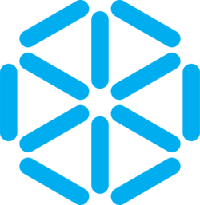
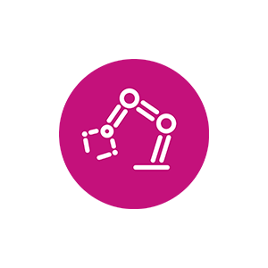

Antes de arrancar, que sepan con quién están hablando.
No es una clase extra. Es algo mucho más valioso.
Es un proceso de acompañamiento personalizado que busca potenciar tus habilidades, anticipar obstáculos y orientarte a lo largo de tu trayectoria universitaria.
Orientamos, acompañamos, escuchamos y empatizamos. Somos guía académica y logística.
Así como un sistema de control de lazo cerrado ajusta su salida con base en la retroalimentación, la tutoría es el feedback que te ayuda a recalibrar tu camino académico antes de que la señal de error sea demasiado grande.
NO estás solo/a!. Hay toda una estructura detrás tuyo.
Son cosas distintas. No las confundas.
Es una instancia técnica para recuperar una materia específica. Se activa cuando ya estás en rojo al final del semestre. Allá vas a estudiar conceptos.
Es un espacio de acompañamiento preventivo y estratégico. Aquí venís a diseñar tu estrategia de éxito. No esperés a estar en una mala situación para pedir ayuda
Con honestidad, para que nadie se lleve sorpresas.
Herramientas concretas para que no tengas que descubrir todo de cero.
Lo que no está en el sitio oficial. Info de primera mano.
Agenda académica, plataformas útiles y becas disponibles.
Traducido al lenguaje que mejor entendés.
Lo que nadie te dice en la bienvenida oficial.
Estudié, pepensé que estaba bien, y no salió como esperaba. Es parte del proceso, no el fin del mundo.
De pronto son las 2am y mañana tenés entrega. Aprender a organizarse es la materia más difícil del semestre.
Preguntar no es debilidad. Las personas que más lejos llegan son las que aprendieron a preguntar a tiempo. Es importante conocer como trabaja cada organismo de la UTEC.
Este es nuestro primer encuentro. El espacio es de ustedes. Pregunten, duden, cuenten. Acá no hay preguntas tontas.
📋 Dejar una duda o consulta anónimaLink a Google Form. Podés dejar preguntas de forma anónima — las revisamos en el próximo meeting